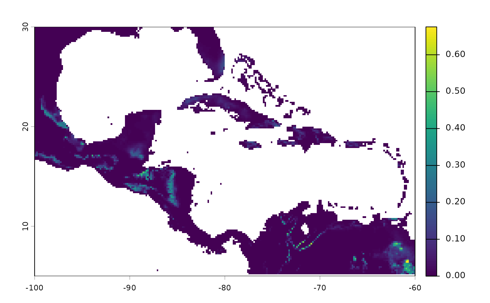

Applies a prepared composite sampling bias surface to a suitability raster by multiplication. The bias surface is aligned to the suitability grid when needed and the result is cropped and masked to the suitability domain. The output is a product of suitability and bias and is therefore no longer interpretable as a probability.
Usage
apply_bias(
prepared_bias,
prediction,
prediction_layer = NULL,
effect_direction = "direct",
verbose = TRUE
)Arguments
- prepared_bias
A single-layer
SpatRastercomposite bias surface, or the list output fromprepare_biascontaining acomposite_surfaceelement.- prediction
A
SpatRastercontaining one or more suitability layers with values in[0, 1].- prediction_layer
Character. Name of the layer to extract from
predictionwhen it contains multiple layers. IfNULL(default) andpredictionhas a single layer, that layer is used.- effect_direction
Character. How the bias surface is applied to the suitability layer.
"direct"(default) multiplies suitability by the bias directly — higher bias increases sampling probability."inverse"multiplies by \(1 - \text{bias}\) — higher bias decreases sampling probability.- verbose
Logical. If
TRUE(default), prints progress messages.
Value
A named list of class "nicheR_biased_surface" containing:
One
SpatRasterper input suitability layer, named"<layer>_biased". The raster layer name includes the applied direction (e.g.,"suitability_biased_direct").combination_formula: a character string describing the operation applied (e.g.,"suitability * bias"or"suitability * (1-bias)").
Details
The function performs the following steps:
Extracts the composite bias surface from
prepared_bias.Verifies both bias and suitability values are within
[0, 1].Aligns the bias surface to the suitability grid if geometries differ, using
terra::resample()with nearest-neighbor interpolation.Multiplies suitability by the (possibly inverted) bias surface.
Crops and masks the output to the suitability domain.
See also
prepare_bias to build the composite bias surface,
sample_biased_data to sample occurrences from the output.
Examples
# \donttest{
range_df <- data.frame(bio_1 = c(22, 28),
bio_12 = c(1000, 3500),
bio_15 = c(50, 70))
ell <- build_ellipsoid(range = range_df)
#> Starting: building ellipsoidal niche from ranges...
#> Step: computing covariance matrix...
#> Step: computing additional ellipsoidal niche metrics...
#> Done: created ellipsoidal niche.
ma_bios <- terra::rast(
system.file("extdata/ma_bios.tif", package = "nicheR"))
pred_rast <- predict(ell,
newdata = ma_bios,
include_suitability = TRUE,
include_mahalanobis = FALSE)
#> Starting: suitability prediction using newdata of class: SpatRaster...
#> Step: Ignoring extra predictor columns: bio_5, bio_6, bio_7, bio_13, bio_14
#> Step: Using 3 predictor variables: bio_1, bio_12, bio_15
#> Done: Prediction completed successfully. Returned raster layers: suitability
bias_rast <- terra::rast(
system.file("extdata/ma_biases.tif", package = "nicheR"))
bias <- nicheR::prepare_bias(bias_surface = bias_rast[[1]],
effect_direction = "direct")
#> Starting: prepare_bias()
#> Step: splitting SpatRaster into layers...
#> Step: bias_surface is a SpatRaster. Using first layer as template surface...
#> Step: mask_na = FALSE. Expanding template to union extent (keeping finest resolution).
#> Step: standarizing (min/max) and applying direction of effect to 1 bias layer/s...
#> Step: building standarized (min/max) directional composite bias surface (mask_na = FALSE)...
#> Done: prepare_bias()
biased_pred <- nicheR::apply_bias(prepared_bias = bias,
prediction = pred_rast,
prediction_layer = "suitability")
#> Starting: apply_bias()
#> Step: applying bias with 'direct' effect to to "suitability" layer...
#> Done: apply_bias(). Note: values are no longer probabilities
terra::plot(biased_pred$suitability_biased)

# }